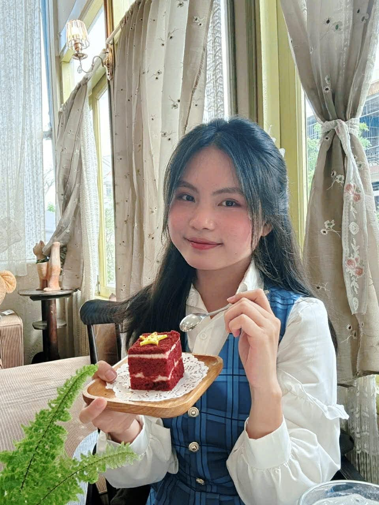

Sinh viên khoa Ngôn ngữ và Văn hóa Anh, Trường Đại học Ngoại ngữ – ĐHQGHN (ULIS). Portfolio này lưu lại hành trình 6 bài thực hành của học phần Nhập môn Công nghệ số và Ứng dụng Trí tuệ nhân tạo.

Mình là sinh viên khoa Ngôn ngữ và Văn hóa Anh tại Trường Đại học Ngoại ngữ, Đại học Quốc gia Hà Nội (ULIS). Bên cạnh chuyên ngành ngôn ngữ, mình có nền tảng và niềm yêu thích với thiết kế đồ họa cùng hội họa, những lĩnh vực đòi hỏi tư duy thẩm mỹ và khả năng kể chuyện bằng hình ảnh.
Học phần Nhập môn Công nghệ số và Ứng dụng Trí tuệ nhân tạo là cơ hội để mình tiếp cận có hệ thống với các công cụ số và AI, từ đó xây dựng năng lực làm việc chủ động, hiệu quả hơn trong môi trường số hiện nay dù xuất phát điểm là một sinh viên khối ngành ngôn ngữ.
Portfolio này tổng hợp toàn bộ quá trình thực hành 6 bài tập của học phần, được trình bày có hệ thống nhằm phục vụ việc theo dõi tiến trình học tập cũng như chia sẻ với người quan tâm.
Rèn luyện kỹ năng tạo, đổi tên, sao chép, di chuyển và xóa tệp/thư mục trên File Explorer (Windows).
ThucHanh_MyDung, bên trong tạo thư mục con TaiLieuGhiChu.txt → GhiChuQuanTrong.txt)Một quy tắc đặt tên rõ ràng và cấu trúc thư mục logic ngay từ đầu giúp việc tìm kiếm, sao lưu và làm việc nhóm về sau nhanh và ít nhầm lẫn hơn hẳn.
Chủ đề: Ảnh hưởng của công cụ AI đối với việc học tiếng Anh
Thu thập và đánh giá 10 nguồn (sách, bài báo khoa học, báo cáo tổ chức quốc tế) liên quan đến AI trong giáo dục ngôn ngữ, sử dụng các từ khóa học thuật như "AI in language learning", "LMS effectiveness".
Thử nghiệm 3 mức độ prompt (cơ bản → cải tiến → nâng cao) trên 3 tác vụ học tập.
| Tác vụ | Prompt cơ bản | Prompt nâng cao |
|---|---|---|
| Tóm tắt tài liệu | Ngắn, thiếu trọng tâm | Có cấu trúc, giữ luận điểm chính |
| Giải thích khái niệm | Chung chung, khó hiểu | Có ví dụ, đúng đối tượng người học |
| Tạo câu hỏi ôn tập | Đơn giản, thiếu đáp án | Đa dạng mức độ, sát chương trình học |
Vai trò: Nhóm trưởng (Leader) – Dự án video "AI và áp lực so sánh trên mạng xã hội đối với giới trẻ Việt Nam"
Xây dựng hệ sinh thái 4 công cụ: Zalo để điều phối và ra quyết định nhanh, Google Sheets để phân công và theo dõi tiến độ minh bạch, Google Docs để cộng tác soạn kịch bản theo 3 giai đoạn, Google Drive để lưu trữ tài nguyên có cấu trúc.
Sản phẩm: Infographic "Biến đổi khí hậu – Hành động nhỏ, thay đổi lớn"
| Công cụ | Vai trò |
|---|---|
| Claude | Xây khung nội dung, viết prompt lặp để tối ưu độ dài |
| ChatGPT | So sánh góc nhìn, viết lời kêu gọi hành động mạnh mẽ hơn |
| Canva AI | Tạo tagline (Magic Write) và hình minh họa trực quan |
AI hỗ trợ khoảng 40–45% nội dung khung sườn ban đầu. Phần còn lại 55–60% là biên tập, kiểm chứng số liệu, thiết kế bố cục và điều chỉnh giọng văn — do cá nhân thực hiện.
Nghiên cứu chính sách AI của ĐHQGHN kết hợp thực hành viết luận có AI hỗ trợ.
Thực hành viết luận tiếng Anh với sự hỗ trợ của Claude qua 4 bước prompt: lập dàn ý → viết mở bài → yêu cầu chỉnh sửa cụ thể → kiểm tra tính học thuật. Mọi số liệu AI đưa ra đều được đối chiếu lại với nguồn gốc trước khi sử dụng.
Quá trình thực hiện 6 bài tập trong học phần này đã giúp mình hình thành cách tiếp cận có hệ thống hơn với các công cụ số và AI trong học tập. Từ kỹ năng quản lý tệp tin cơ bản, tìm kiếm và đánh giá nguồn học thuật, đến việc ứng dụng AI trong sáng tạo nội dung, mỗi bài tập đều góp phần xây dựng một mảnh ghép trong bức tranh năng lực số toàn diện.
Thách thức lớn nhất là ở vai trò điều phối nhóm tại Bài 4, đòi hỏi khả năng tổ chức công việc và duy trì tiến độ giữa các thành viên có lịch trình khác nhau. Kinh nghiệm này giúp mình nhận ra tầm quan trọng của việc thiết lập quy trình làm việc rõ ràng ngay từ đầu.
Bài học quan trọng nhất rút ra từ toàn bộ dự án là: AI mang lại hiệu quả đáng kể khi được sử dụng đúng cách, nhưng giá trị cốt lõi vẫn nằm ở tư duy phản biện và trách nhiệm của người sử dụng. Đây cũng là nguyên tắc mình sẽ tiếp tục áp dụng trong quá trình học tập, và sau này là trong công việc liên quan đến ngôn ngữ, thiết kế và sáng tạo nội dung.